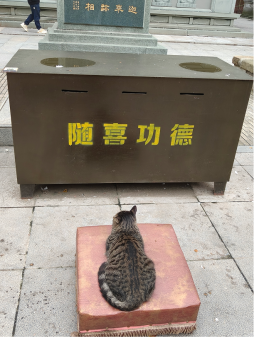
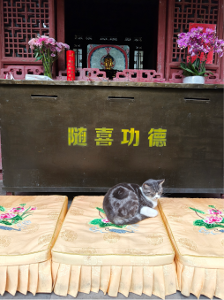
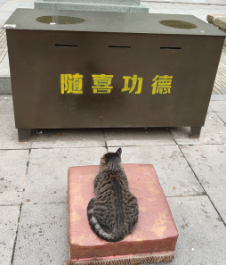
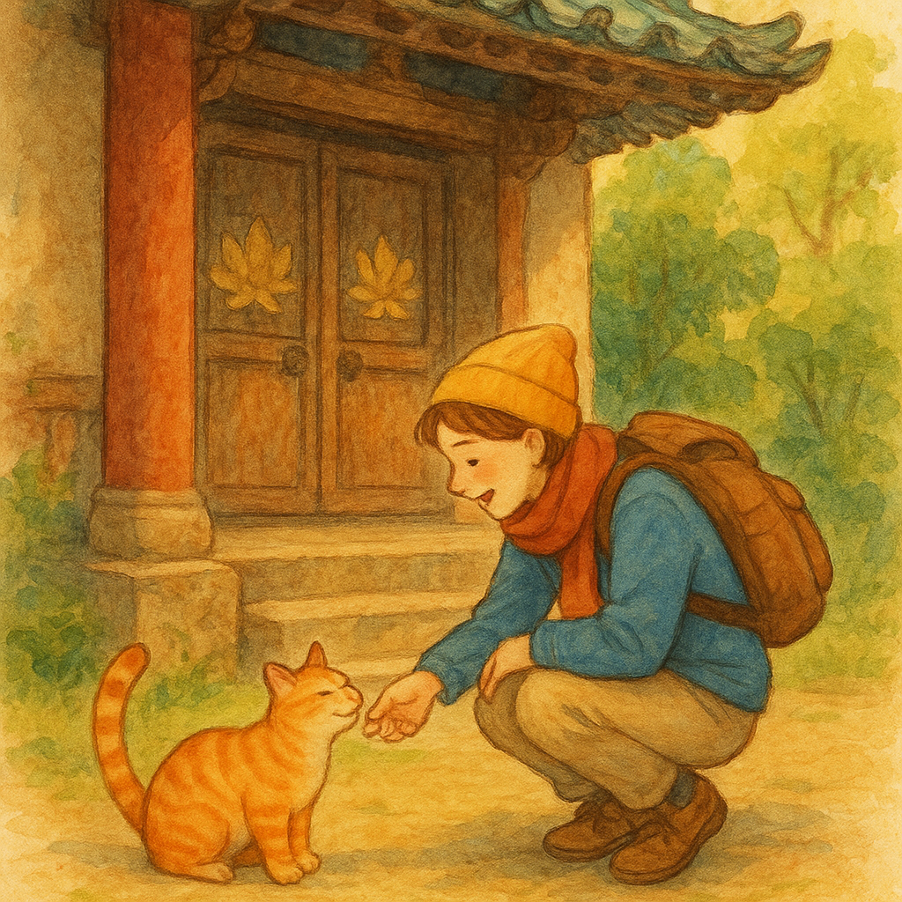
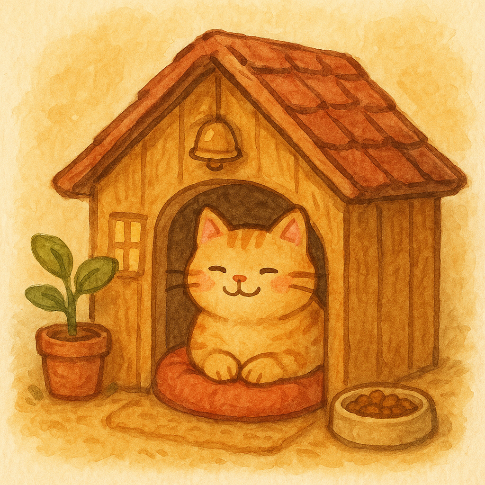
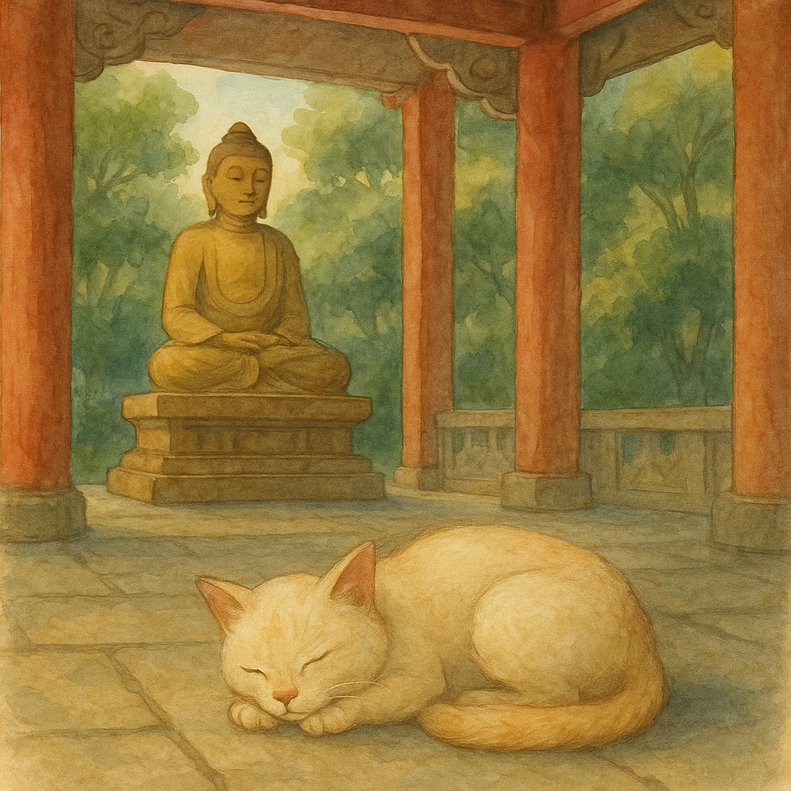

我这次去西安的一个寺庙里面，里面有很多很多小猫，还有专门给小猫搭的房子。然后，有很多游客都来喂这些小猫，感觉它们长得也很安详，和寺庙的氛围很融合。
2025.10，西安寺庙里面的小猫
G1 猫咪与寺庙 → left [S_overlap_F1, S_text_F4]
G2 游客与猫咪 → right [S_text_F2]
G3 猫咪的空间 → bottom-left [S_text_F3]
画布: 2493 × 1558 px
规划耗时: 4431.6 ms
OmDet: 23 个检测 (altar, cat, cushion, dog, mat, person, shoe, table, altar, book, bottle, cake, candle, cat, cushion, desk, dining table, dog, flower, mat, painting, potted plant, table, vase)
S_text_F2 AI生成图片 (耗时 43177.24ms)
S_text_F3 AI生成图片 (耗时 101347.31ms)
S_text_F4 AI生成图片 (耗时 101114.54ms)
S_overlap_F1 crop: [1,45]-[254,336] 来源=omdet 匹配=cat(0.93), altar(0.51), table(0.40), mat(0.85), cushion(0.40) 最高分=0.93